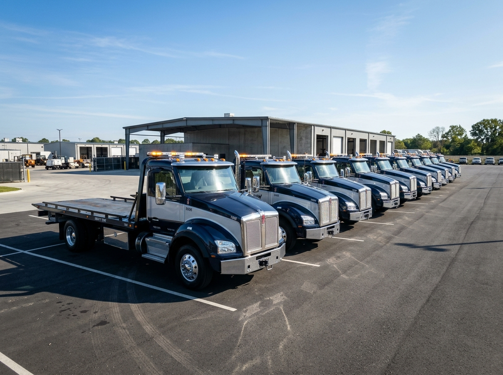

RescueFleet has strategically positioned trucks and service centers across the state to ensure maximum coverage. Whether you're in a bustling downtown, a quiet suburb, or stranded on a remote highway, our GPS-tracked fleet can reach you quickly.
Our AI-powered dispatch system identifies the nearest available truck and routes it to your location using real-time traffic data, ensuring the fastest possible response time.
Different zones, same high-quality service. Response times vary based on location type.
Full-service coverage in all major city centers. High truck density ensures the fastest response times of 10-15 minutes even during peak hours.
Extended reach into suburban neighborhoods, shopping areas, and residential communities surrounding major metro areas.
Coverage along all major interstate corridors, toll roads, state highways, and rural routes connecting cities across the region.
Our network spans major cities, surrounding suburbs, and connecting highways.
We maintain active coverage along all major interstate highways in the state. Our highway teams are specially trained for high-speed roadside situations and work closely with highway patrol for safe operations.
Our AI-powered dispatch and GPS tracking ensure rapid response across all zones.
Average in city centers
Average in suburbs
Average on highways

Our fleet consists of flatbed carriers, wheel-lift trucks, and fully equipped service vans. Every vehicle is GPS-tracked and maintained to the highest standards.
Enter your ZIP code or nearby highway corridor to verify live fleet readiness and estimated arrival windows — or reach our 24/7 dispatch coordinator anytime.